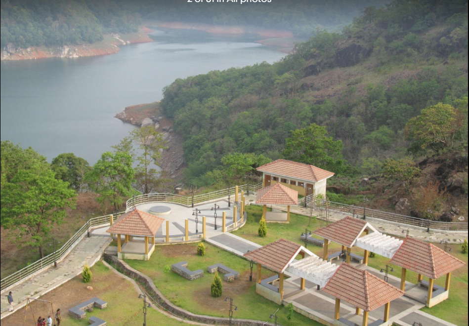
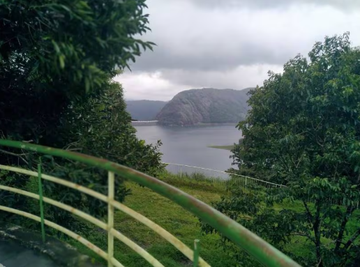
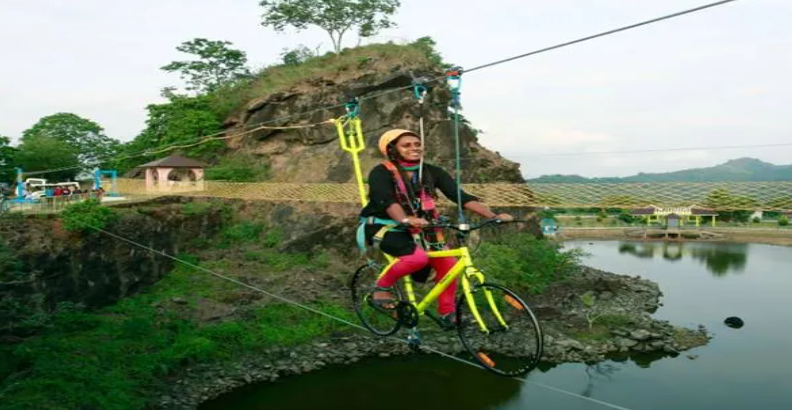
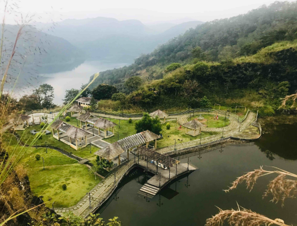
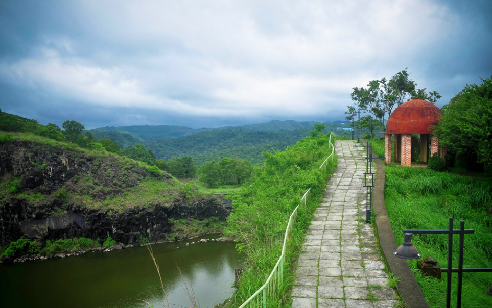

Hill View Park is a popular tourist spot in Idukki, located near the famous Idukki Dam. It is known for its beautiful garden, peaceful environment, and stunning views of the surrounding hills and reservoir. The park is well maintained with walking paths, play areas, and viewpoints where visitors can relax and enjoy nature. It is an ideal place for families and tourists to spend time, take photos, and experience the scenic beauty of Idukki.





Hill View Park is one of the most popular tourist attractions in Idukki District, Kerala. Located near Cheruthoni, the park offers breathtaking views of the famous Idukki Arch Dam and Cheruthoni Dam. It is known for its beautiful gardens, boating facilities, children's play area and scenic viewpoints.
Hill View Park was developed by the District Tourism Promotion Council (DTPC) to promote tourism in Idukki. Over the years, it has become one of the most visited family destinations in the district because of its beautiful landscape and excellent facilities.
Hill View Park offers panoramic views of the Idukki and Cheruthoni Dams. Visitors can enjoy landscaped gardens, pedal boating, herbal gardens, children's play area, watch towers and walking paths.
The park is home to flowering plants, ornamental trees, medicinal herbs and beautifully maintained gardens. The greenery provides a peaceful environment for visitors.
Today, Hill View Park is one of the best family tourist destinations in Idukki. It attracts visitors with its scenic viewpoints, boating facilities, children's park and magnificent views of the Idukki and Cheruthoni Dams.